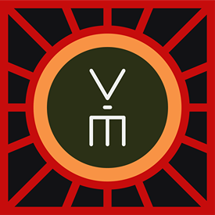

TOUR ĐÊM VĂN MIẾU - VAN MIEU NIGHT TOUR
Giá từ 0đ
🗓️ 03 tháng 05, 2026
📍
Văn Miếu - Quốc Tử Giám
58 Quốc Tử Giám, Phường Văn Miếu, Quận Đống Đa, Hà Nội
▼ Click để xem Giới thiệu chi tiết, Lịch trình & BTC ▼
TOUR ĐÊM VĂN MIẾU - VAN MIEU NIGHT TOUR
Giá từ 0đ
Giới thiệu sự kiện
Tham quan Văn Miếu Đêm
Một không gian vừa mộc mạc, vừa quen thuộc nhưng lại ấn tượng về đêm với sắc thái ngàn năm văn hiến. Nhấn mạnh vào hành trình học, trở thành những bậc kỳ tài của đất nước, không gian Văn Miếu - Quốc Tử Giám về đêm được tái hiện toàn cảnh một môi trường đơn sơ về học tập thời xưa, trong trang sử 1000 năm trước, nơi hệ thống giáo dục phần lớn do các Thầy Đồ đảm nhiệm. Đến với tour đêm Văn Miếu, bạn sẽ có cái nhìn toàn cảnh về nền quốc học Việt Nam, nơi mỗi người không chỉ học cái chữ mà còn học để khám phá ra cái chân - thiện - mỹ đã có sẵn nơi mình.
Hành trình sẽ đi qua các phần: lớn lên với lời ru của mẹ, lời dạy của cha; và hành trình trải nghiệm con chữ qua công nghệ mới thực tế ảo; điểm nhấn quan trọng trước khi bước vào không gian học tập thời xưa là trò chuyện với cụ rùa qua công nghệ AI, với những câu hỏi từ đơn giản đến sâu sắc, "cụ" sẽ trả lời cho mọi người các thông tin hết sức hữu ích về Văn Miếu - Quốc Tử Giám và lịch sử Việt Nam.
Một trong những điểm nhấn chính là không gian học tập thời xưa với Thầy Đồ, với bút mực, giấy dó... nhằm cho khách tham quan cảm nhận được không khí của những nhân tài thời xưa phải trải qua hành trình học tập như thế nào. Chương trình kết lại bằng trải nghiệm xem trình chiếu 3D mapping "Tinh hoa đạo học", "Sử đá lưu danh", làm sáng lên toàn bộ cái tinh hoa của học tập thời đó.
Chi tiết trải nghiệm:
- Chương trình chính: Chương trình nghệ thuật ánh sáng trên nền di tích Văn Miếu Quốc Tử Giám. Với các hoạt động trải nghiệm thực tế với thầy Đồ, với bia đá và giao lưu với Cụ Rùa Thông Thái.
- Trải nghiệm đặc biệt: Làm nho sinh, trải nghiệm 3d Mapping, Những câu chuyện thú vị thông qua công nghệ ánh sáng. Trải nghiệm VR tại chương trình.
Lịch trình & Lưu ý
LỊCH DIỄN THÁNG 5/2026
🎭 Số suất diễn: 13 suất diễn trong tháng.
📅 Các ngày diễn: 03, 06, 09, 10, 13, 16, 17, 20, 23, 24, 27, 30, 31 Tháng 05.
Ban tổ chức

TRUNG TÂM HOẠT ĐỘNG VĂN HÓA KHOA HỌC VĂN MIẾU – QUỐC TỬ GIÁM
Liên hệ BTC:
Điện thoại: 0329060121 - Nguyễn Văn Phong
Phụ trách kinh doanh
LƯU Ý
• Chương trình trình chiếu 3D Mapping diễn ra theo khung giờ cố định (19h45 và 20h45).
• Vui lòng có mặt đúng giờ mở cửa (18h30) để không bỏ lỡ các trải nghiệm tương tác AI.
• Vé không hoàn trả nhưng được hỗ trợ đổi ngày nếu gặp điều kiện thời tiết xấu.